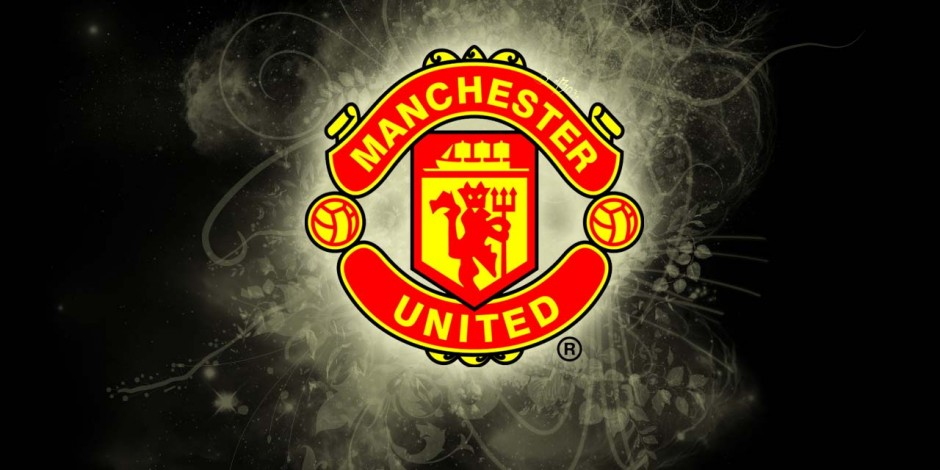

PSG 1 United 3: The Stats you Need to Know

Manchester United's epic Champions League last-16 second-leg victory at Paris Saint-Germain on Wednesday was undoubtedly one of the greatest nights in the club's illustrious history.
There were so many positive things to emerge from the Reds' memorable triumph at the Parc des Princes, which saw us advance to the quarter-finals of Europe's elite competition.
On a night of sheer tension and drama, there were also a host of statistics arising from a game which will live long in the memory. We've picked out some of the key facts and figures for you...
Find Below the stats you need to know:
- United are the first team in Champions League history to progress to the next round having lost by two or more goals at home in the first leg.
- The Reds scored more than once in an away Champions League knockout match for the first time since the 2010/11 semi-final against Schalke 04.
- Romelu Lukaku's first goal was our fastest in a Champions League knockout match since Wayne Rooney scored after 63 seconds against Bayern Munich in 2010.
- Marcus Rashford's winning penalty was the first he has ever taken in a competitive match for United's first team.
- The Reds have now scored in 21 successive away matches in all competitions, equalling the club record set between November 1956 and September 1957.
- Mason Greenwood became the youngest player to appear for United in the Champions League, at the age of 17 years and 156 days.
- United won on away goals for only the second time in our history. The other occasion was in the first round of the European Cup-Winners' Cup at Dukla Prague in 1983/84.
- Romelu Lukaku has scored multiple goals in three successive games for the first time in his career, after his brace against PSG.
Wednesday March 6, 2019